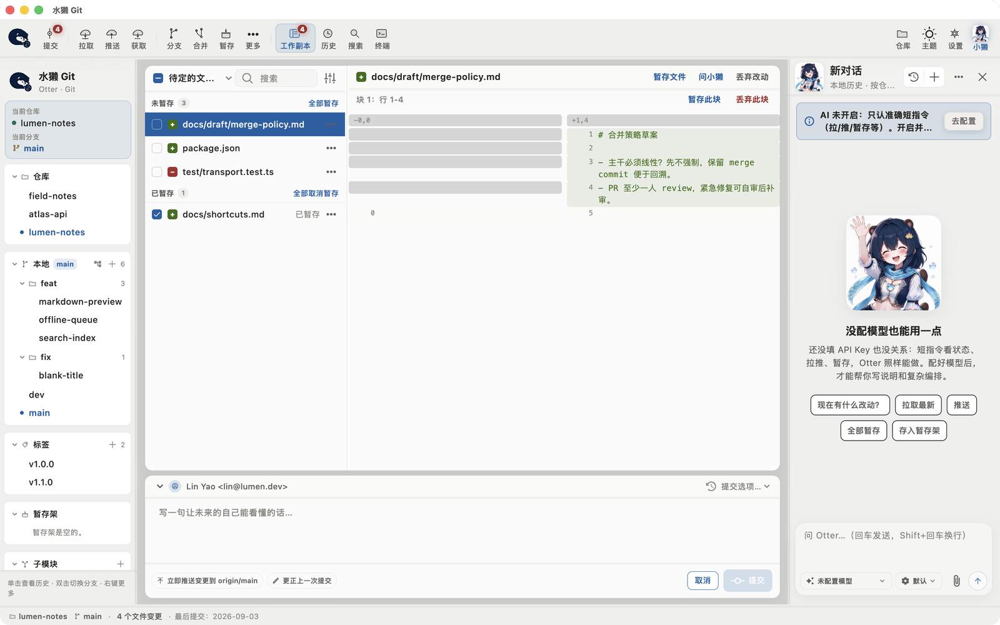
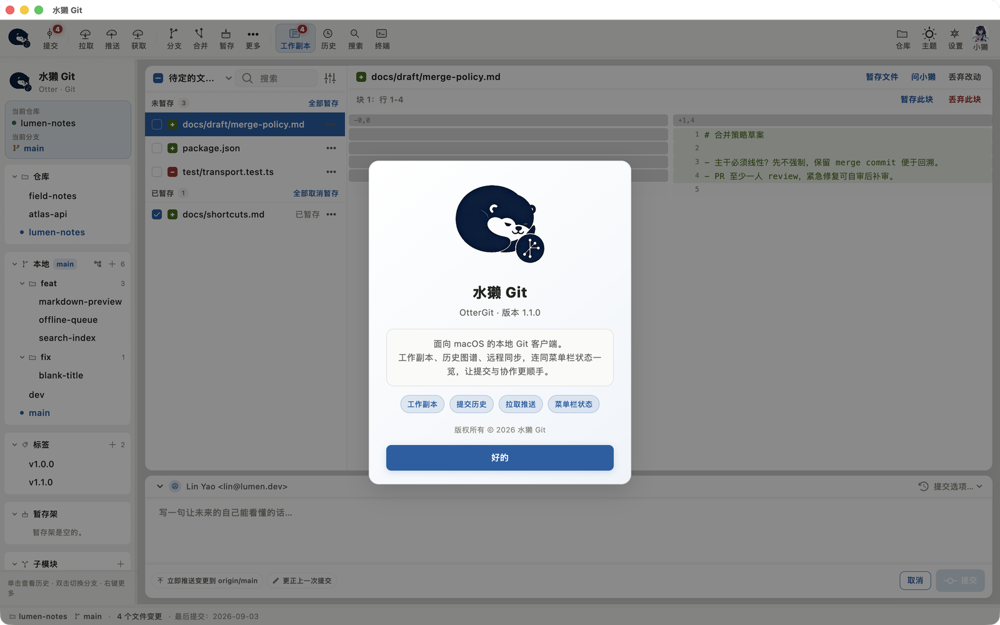
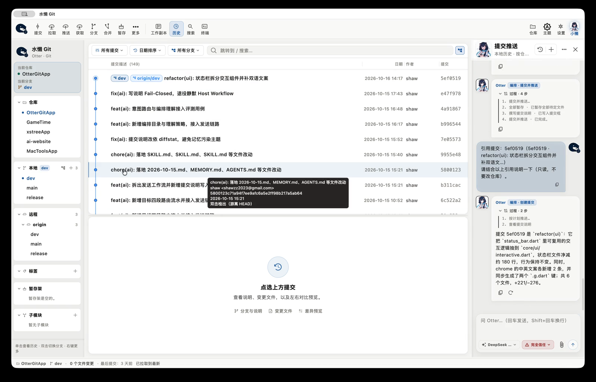

一块一块挑
不让你对着满屏 <<<<<<< 删符号。选中哪块留哪块，选完直接提交。
git push 被拒的那一刻，多数人打开浏览器开始搜报错。
水獭 Git 让你不用搜：落后几个、分没分叉、哪个文件冲突，
全在同一屏里摊开。说不清的地方，小獭先问你——它不替你猜。

1.1 不发新功能，只做一件事：让这个窗口看起来、用起来都更像一台 Mac 上的原生工具。 改的不是配色，是每一层表面的关系——谁浮在谁上面、谁该透出底下的东西。
GlassSurface，不再各画各的模糊/ 后折行，feature/2026-10-refactor 这种名字能完整读出来
git push 回你一句
non-fast-forward；
git status 甩你四十行英文。
你真正想知道的只有三件事：落后几个、分没分叉、哪个文件打架。
这三件事，命令行从来不肯直接告诉你。
所以水獭 Git 把它画出来。不是把终端包一层皮，是把状态摊平。
分支线画在最左边，谁合了谁、谁从哪儿分出去，跟着线走一遍就明白了。 每条提交的哈希、作者、日期、+- 行数排在同一行。
git status
三栏并排：左边提交、中间变更文件、右边逐行对照。原文件和改后的文件行号一一对齐， 加的行标绿，删掉的标灰，不会因为多了一行就整段错位。

冲突被切成一块一块：没争议的自动过，有争议的摆在你面前，选左边、选右边，还是自己写。 三方对照摆在同一行上，谁改了什么一眼看得见。
不让你对着满屏 <<<<<<< 删符号。选中哪块留哪块，选完直接提交。
基准版、你的改动、对方的改动并排摆着。谁先动的手，看得清。
不冲突的块自动合并，只把真正打架的那几行留给你。
常开的仓库收进一个列表，路径、分支、最后改动都写在名字下面。
双击就进去，切仓库不用 cd 到另一个目录再敲命令。

主题跟着系统走，字号随你调；git 可执行文件路径能自己指定： 用 homebrew 装的那份，或者系统自带的那份，都行。

NSStatusItem 挂在菜单栏上，鼠标一停就能看到分支、远程差。不开主窗口也能知道要不要拉一下。
哪次提交把功能弄坏了？git bisect 有界面，标好、标坏，它自己二分。
改错分支了？挑一个提交生成 patch，带到正确的分支上接着用。
仓库、分支、搜索条件都能存成书签，下次一点就到。
跨分支搜索，结果直接落到历史列表里，选中就能看 diff。
提交、拉取、推送、切换分支都有快捷键，按 ? 出一览。
小獭读得到你的仓库状态，也动得了你的分支。所以它不靠「聪明」赢得信任，靠规矩。 三条纪律，三档权限，一本连失败都记着的账。
暂存了一半、工作区还剩一半，它不替你做决定，把两个选项摆出来：「只提交已暂存的，还是全部一起」。你说清楚的时候，它一句废话没有。
问「为什么推不上去」，它答的是「领先 2 个、落后 3 个，直接 pull 会造一个合并提交，建议改走变基」。分叉、游离 HEAD、没设上游，一条条查给你看。
读随便看，写要确认，高危必须你点头。它干的每件事都留在对话里，做过什么、什么时候做的，翻得到。
任何写操作都弹窗。编排一律先给你审一遍再跑。最慢，也最稳。
只读与可逆的写（暂存、写提交说明、建分支）直接跑；拉取、推送、强制推送、reset --hard 仍然要确认。
沙箱内自动执行，不打断。知道自己在做什么的人再用它。
不管是哪一档，冲突中提交、非法全暂存这类硬规则，宿主一律拦住。
谁也不喜欢「AI 用量」四个字后面跟着一句「详见账单」。水獭 Git 把账摊开： 请求次数、输入输出令牌、合计、成功与失败，一次一条记录，时间精确到秒。
一次一条记录，时间精确到秒。失败不抹掉。
它把活拆成四步：暂存 → 写说明 → 提交 → 推送。做一步勾一步，中途能叫停。 提交说明这种脏活它包了，但推之前会停下来问你一次。

51 秒，跟着旁白看新版长什么样：三层玻璃的界面、一条泳道的提交历史、 行号对齐的 diff、以及小獭怎么在动手前先问你一句。画面全部是新版真机录屏。
macOS 是个 DMG，拖进「应用程序」就能用，已签名、已公证，第一次打开不会被拦。
Windows 是个 zip，解压后双击 otter_git.exe。
本机得有 git，终端敲 git --version 先确认一下。
免费 · macOS 12+（Apple Silicon）· Windows 10 / 11 x64 预览 · Intel 机器暂时要自己编译
Windows 预览版尚未代码签名：首次运行若被 SmartScreen 拦下，点「更多信息 → 仍要运行」；
托盘、拖放、深色跟随这些交互还没在真机全验过，遇到问题欢迎反馈。
校验 SHA256：macOS dmg c651dca6…685b1 · Windows zip d1a4df42…56dfd（完整值见 Release 页）
怕睡着之后被水流冲散。你的仓库也一样——领先落后、分叉游离， 总得有个谁替你牵着。小獭干的就是这个：你写代码，它看家。
界面是照着一张纸做的：米白底、宋体字、四像素墨线、不带模糊的硬投影。 没有渐变玻璃，没有圆角药丸，没有「正在为你加载」的旋转圈。
免费。没有内购、没有订阅、没有「专业版」按钮。功能都在，不锁。
小獭的模型费用是你自己和模型服务商结算的，App 不赚差价，也不抽成。
它有三档权限：询问（每步都问）、默认（可逆的直跑，拉推要确认）、完全信任（沙箱内自动跑）。默认就是中间那档。
不管哪一档，冲突中提交、非法全暂存这类硬规则，宿主一律拦住，模型说什么都不算数。它做过的每件事都在对话里，翻得到。
这问题问小獭正合适。它先看仓库状态：分没分叉、领先落后几个，然后给建议、给选项，你确认了才动手。
本地有没提交的改动也不怕：先暂存，拉完再给你放回来。
各有各的好，不吹。水獭 Git 押在三件事上：行号对齐的对比、一块块挑的冲突、一个会先问你的 AI。
装一个试试，不合适就删进废纸篓，不绑架你。
目前只有 macOS · Apple Silicon（M 系列芯片）。Windows / Linux 版在计划中，还没有发布时间。
Intel 机器暂时需要自行编译源码。
走 OpenAI 兼容接口：baseUrl、模型名、密钥都自己填，存在本机。用哪家、花多少，你自己定。
用多少记在「用量明细」里：请求次数、输入输出令牌、合计、成功失败，精确到秒。
水獭会仰躺在水面上，把石头搁肚皮上敲贝壳——工具就该长这样：顺手、老实、看着舒服。
小獭负责卖萌，Git 本身负责靠谱。
仓库读写全在你本机，走的是本地 git。只有你主动跟小獭说话时，它才会把需要判断的那点内容发给模型服务。发什么，对话里写得清清楚楚。
不跟它说话，它就是个普通的 Git 客户端。